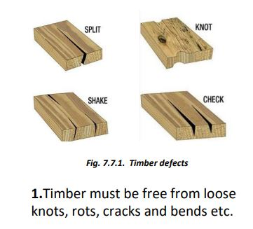
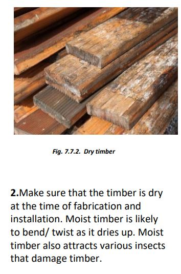
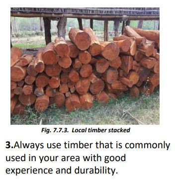
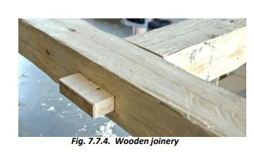
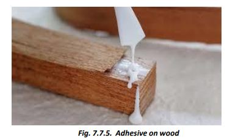

   
4. Always use steel fasteners/cleats at joints. Mortice and Tenon type joints become weak at the joints and break during earthquakes and wind storms. Therefore, these joints must be strengthened by steel fasteners/cleats.
5. Check that all joints fit tightly. Better apply some adhesive like Fevicol to the joints to avoid loosening due to differential shrinkage with time.